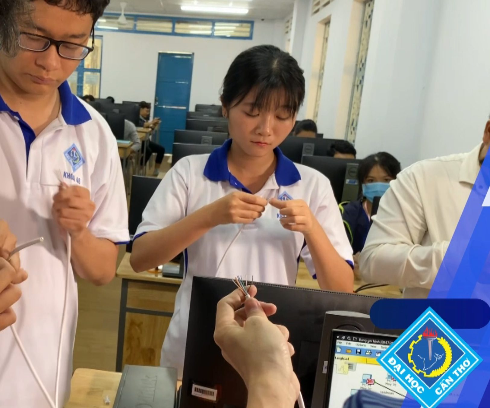
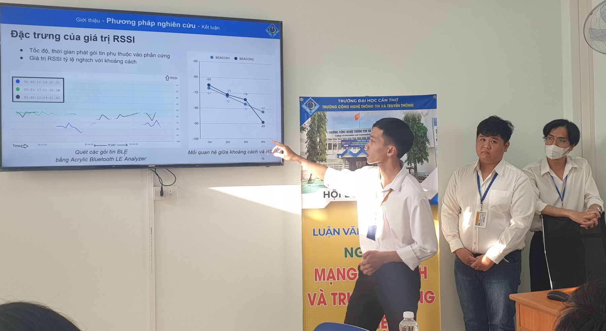

Kỹ sư Mạng máy tính & Truyền thông dữ liệu
Mã ngành 7480102 · 161 tín chỉ · Thời gian đào tạo 4,5 năm · Chứng nhận AUN-QA giai đoạn 2021–2026
Video giới thiệu ngành Mạng máy tính và Truyền thông dữ liệu
Giới thiệu ngành
Ngành Mạng máy tính và Truyền thông dữ liệu nghiên cứu những nguyên lý kết nối các máy tính thành mạng; cách thiết kế, xây dựng một hệ thống mạng từ mạng nội bộ cho đến mạng diện rộng có kết nối toàn cầu; sự trao đổi thông tin, dữ liệu giữa các thành phần trên mạng; phát triển ứng dụng mạng, ứng dụng Web, xử lý dữ liệu lớn và tính toán hiệu năng cao.
Chương trình đào tạo MMT-TTDL nhằm đào tạo kỹ sư có kiến thức cơ sở lý thuyết, toán và khoa học được sử dụng trong ngành mạng máy tính và truyền thông dữ liệu. Sinh viên được trang bị các kiến thức cơ sở, chuyên sâu của ngành, khả năng phân tích, thiết kế, đề xuất giải pháp đáp ứng nhu cầu của một tổ chức hay cá nhân; phát triển ứng dụng mạng, phần mềm trên thiết bị di động, phần mềm tự do nguồn mở, ứng dụng web, dịch vụ web, mô hình client-server, tính toán lưới, điện toán đám mây, dữ liệu lớn, giải thuật song song, phân tán và Internet kết nối vạn vật.
Sinh viên có khả năng giao tiếp bằng Anh ngữ thông thường và chuyên ngành; kỹ năng làm việc độc lập hoặc theo nhóm, có đạo đức và sức khỏe; có năng lực ngoại ngữ, nghiên cứu khoa học, sáng tạo, khởi nghiệp, đáp ứng yêu cầu hoàn thiện bản thân người học, phục vụ phát triển kinh tế — xã hội vùng và quốc gia trong bối cảnh cuộc cách mạng Công nghiệp 4.0.


Cấu trúc chương trình
Tổng khối lượng 161 tín chỉ, trong đó 116 tín chỉ bắt buộc và 45 tín chỉ tự chọn. Chương trình ban hành theo Quyết định số 3268/QĐ-ĐHCT ngày 23/6/2026 của Giám đốc Đại học Cần Thơ.
| Khối kiến thức | Tín chỉ | Bắt buộc | Tự chọn |
|---|---|---|---|
| Giáo dục đại cương | 56 | 41 | 15 |
| Cơ sở ngành | 46 | 46 | 0 |
| Chuyên ngành | 59 | 29 | 30 |
| Tổng cộng | 161 | 116 | 45 |
Kế hoạch học tập toàn khóa
Chương trình được bố trí thành 13 học kỳ trong 4,5 năm. Một số học phần chỉ được đăng ký khi đã tích lũy đủ số tín chỉ tối thiểu:
Số tín chỉ theo từng học kỳ của kế hoạch học tập chuẩn:
| Năm | Học kỳ | Bắt buộc | Tự chọn | Tổng |
|---|---|---|---|---|
| Năm 1 | HK1 | 14 | 0 | 14 |
| Năm 1 | HK2 | 7 | 5 | 12 |
| Năm 1 | HK3 | 10 | 4 | 14 |
| Năm 2 | HK4 | 9 | 4 | 13 |
| Năm 2 | HK5 | 12 | 0 | 12 |
| Năm 2 | HK6 | 13 | 0 | 13 |
| Năm 3 | HK7 | 13 | 0 | 13 |
| Năm 3 | HK8 | 12 | 2 | 14 |
| Năm 3 | HK9 | 6 | 6 | 12 |
| Năm 4 | HK10 | 3 | 9 | 12 |
| Năm 4 | HK11 | 12 | 0 | 12 |
| Năm 4 | HK12 | 0 | 15 | 15 |
| Năm 4,5 | HK13 | 5 | 0 | 5 |
| Tổng cộng | 116 | 45 | 161 | |
Đây là kế hoạch chuẩn do Trường bố trí. Sinh viên có thể điều chỉnh theo năng lực, nhưng nên giữ đúng tiến độ để không phải chịu học phí nhân hệ số khi học vượt thời gian thiết kế.
Đơn vị giảng dạy
Các học phần trong khung chương trình do nhiều đơn vị của Đại học Cần Thơ đảm nhiệm:
| Đơn vị | Số học phần |
|---|---|
| Trường Công nghệ Thông tin và Truyền thông | 57 |
| Khoa Ngoại ngữ | 12 |
| Khoa Khoa học Chính trị, Xã hội và Nhân văn | 10 |
| Trung tâm Giáo dục Quốc phòng và An ninh | 4 |
| Trường Khoa học Tự nhiên | 4 |
| Phòng Khoa học, Công nghệ và Đổi mới sáng tạo | 2 |
| Khoa Giáo dục Thể chất | 1 |
| Khoa Luật | 1 |
Số liệu tính cho toàn bộ học phần trong khung chương trình, gồm cả phương án Pháp văn thay thế Anh văn.
Kế hoạch dạy học theo học kỳ
Kế hoạch dạy học chuẩn của ngành Mạng máy tính và Truyền thông dữ liệu gồm 13 học kỳ trong 4,5 năm (3 học kỳ mỗi năm), theo Bản mô tả chương trình đào tạo áp dụng từ Khóa 51. Dòng tiêu đề của mỗi học kỳ ghi tổng số tín chỉ; với học phần tự chọn, sinh viên chọn đủ số tín chỉ tự chọn của học kỳ đó. Học kỳ 10 có hai hướng chuyên sâu: chọn 9 tín chỉ thuộc hướng N1 (Thiết kế và quản trị mạng) hoặc N2 (Tính toán hiệu năng cao). Bấm mã học phần để mở đề cương chi tiết (PDF).
(*) Học phần điều kiện, không tính vào điểm trung bình tích lũy; có thể hoàn thành bằng chứng chỉ theo quy định của Đại học Cần Thơ. Sinh viên học Anh văn hoặc Pháp văn. Chương trình các khóa trước xem tại Chương trình đào tạo các khóa.


